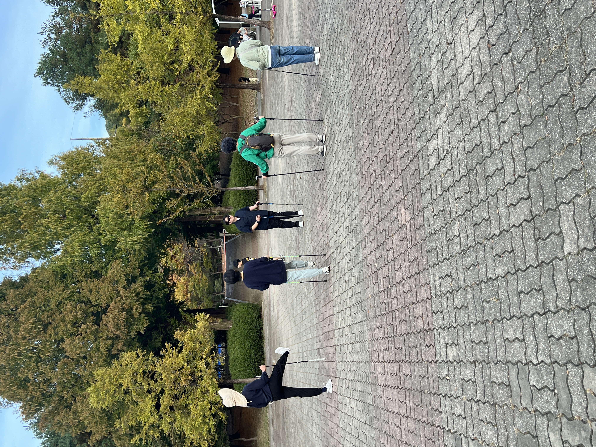
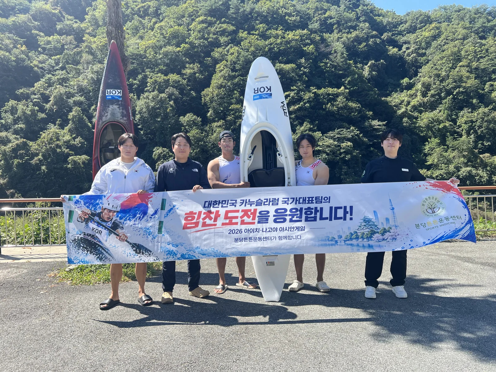
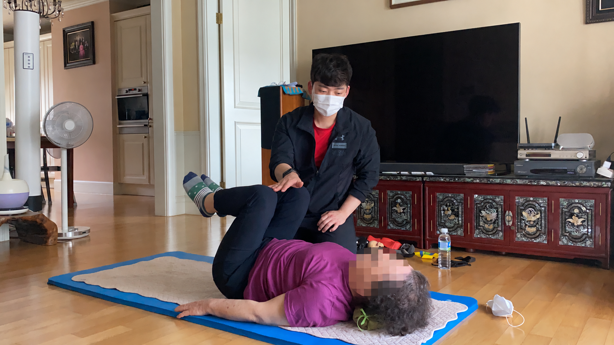

외부 활동

야외 운동 활동
분당 율동공원에서 함께한 노르딕워킹
율동공원에서 1시간 동안 함께 걸으며 폴을 활용한 움직임을 연습한 현장을 소개합니다.
활동 자세히 보기

선수 컨디셔닝
–
아이치·나고야 아시안게임 카누 국가대표 선수 컨디셔닝
국가대표 선수들의 컨디셔닝을 진행한 분당튼튼운동센터의 현장 이야기를 소개합니다.
활동 자세히 보기

교수 대외 활동
2026 WNGP · MUSA · BOB AWARDS 공로상 수상
손진석 대표원장이 대학교 교수로서 참석한 시상식과 공로상 수상 소식을 전합니다.
활동 자세히 보기

재능기부 봉사
–
함께 움직이는 일상, 재능기부 봉사
사회적 약자를 대상으로 운동 지도의 경험을 나누고, 다양한 움직임을 함께한 봉사 현장을 소개합니다.
활동 자세히 보기
언론보도
원장 인터뷰
통증에 대한 두려움 넘어 다시 원하는 일상으로…‘회복’을 돕는 운동
손진석 대표원장 인터뷰를 통해 개인의 몸 상태와 움직임을 살피고, 일상의 자신감과 활력을 되찾도록 돕는 센터의 운동 철학을 소개합니다.
기사 원문 보기
센터 선정
2026 분당구 우수 체형교정센터 선정
정밀한 기능 평가와 1:1 단계별 맞춤 재활, 개인별 사후관리 시스템을 인정받은 분당튼튼운동센터의 전문성을
소개합니다.
기사 원문 보기
센터 이야기
시니어 재활, 회복을 넘어 자신감 있는 일상으로
시니어 맞춤형 재활운동을 통해 신체 기능과 움직임의 자신감을 회복하는 분당튼튼운동센터의 철학을 소개합니다.
기사 원문 보기